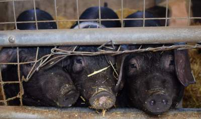
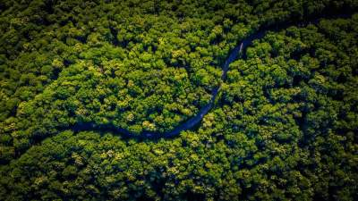
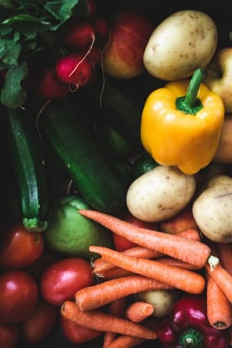

Tierwohl
Das wird für die meisten der am wenigsten überraschendste Grund sein, vegan zu werden. Indem man auf tierische Produkte verzichtet, beschützt man sie davor getötet, misshandelt und ausgenommen zu werden - nur weils schmeckt Je mehr Menschen anfangen, auf planzliche Produkte umzusteigen, desto schwächer wird die Nachfrage nach tierischen Produkten, und je weniger Tiere müssen leiden.
Umwelt
Die Vorteile der veganen Ernährung liegen vor allem in ihrem deutlich geringeren Verbrauch von Ressourcen. Für Tierprodukte wie Fleisch, Milch und Eier müssen erst Futtermittel angebaut werden. Diese jedoch werden von den Tieren größtenteils verstoffwechselt, also in Wärme und Gülle umgewandelt und ausgeschieden - zusammen mit jeder Menge klimaschädlicher Gase. Je nach Tierprodukt landen nur etwa 5-20% der eingesetzten Futter-Kalorien im Endprodukt. Aus 15 Kilo Getreide werden z. B. 1 Kilo Fleisch.
Verarbeitete Tierprodukte sind noch umweltschädlicher. Wer sich pflanzlich ernährt, könnte dieselben Ressourcen etwa 5-10 mal effizienter nutzen. 10 Laib Brot statt einem Steak, zum Beispiel. Und der Wasserverbrauch bei der Erzeugung von Tierprodukten liegt oft um das 100 bis 1000 mal höher als bei pflanzlichen Nahrungsmitteln. Etwa 15.000 Liter pro Kilo Rindfleisch. Ein Kilo Kartoffeln bräuchte dagegen nur etwa 100 Liter Wasser.
Die Anbauflächen der Erde sind begrenzt, während die Weltbevölkerung weiter wächst. Bereits heute verbrauchen wir deutlich mehr Ressourcen als nachwachsen. Der so genannte Earth Overshoot Day, an dem die nachwachsenden Ressourcen pro Jahr verbraucht sind, ist bereits im Sommer. Heute verbrauchen allein die Länder mit hohem Verbrauch an Tierprodukten fast doppelt so viele Ressourcen, als ökologisch nachhaltig wäre. Und der Fleischkonsum steigt weltweit.
Gesundheit
Man hört viele Dinge wenn es um Veganismus geht, aber eins der meist geglaubten Aussagen ist: ,,Aber wo bekommen die denn ihr Protein her?" oder ,,Die müssen ja B12 supplementieren, das kann ja gar nicht gesund sein!". Deswegen werde ich auf diese zwei Aussagen eingehen
Macht euch keine Sorgen, im Supermarkt wimmelt es nur so vor pflanzlichen Proteinen:
- Hülsenfrüchte: Linsen, Erbsen, Kichererbsen
- Sojaprodukte
- Tofu
- Tempeh
- Ölsaaten
- Nüsse
- Vollkorngetreide
- Gemüse: Kohl, Brokkoli, Spinat, Kartoffeln, Wildpflanzen
- Proteinpulver: Hanf, Reis, Soja
...und noch viele mehr! Du nimmst außerdem mit pflanzlichen Proteinen viel mehr Ballaststoffe, Folsäure, sekundären Pflanzenstoffen und anderen Vitaminen auf und verzichtest auf die in tierischen Proteinen enthaltenen ungünstigen gesättigten Fettsäuren und Cholesterin.
So, nun zur zweiten Aussage: B12
Was viele nicht wissen ist: Jedem Tier, das in der Massentierhaltung lebt und nur zum Verzehr lebt, bekommt Vitamin B12 supplementiert. Normalerweise würden sie dieses über die Erde aufnehmen, die an Gräsern klebt. Da aber die aller wenigsten dieser Tiere, jemals Gras oder auch nur die Sonne gesehen haben, wird ihnen minderwertiges B12 ins Futter gemischt. Man supplementiert B12 also sowieso, man muss sich dann nur entscheiden, ob man auch noch das Antibiotika, was alle Tiere bekommen mit aufnehmen möchte, oder lieber doch alle paar Tage ein gutes B12 Supplement selber schluckt.
| Umwelt | Tierwohl |
| Gesundheit | Seelenfrieden |